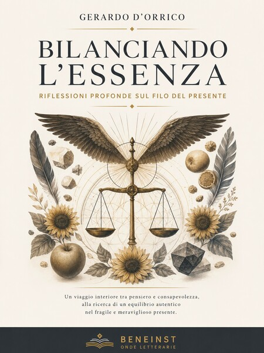
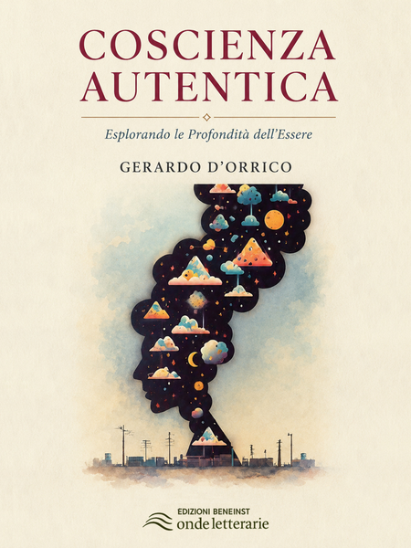
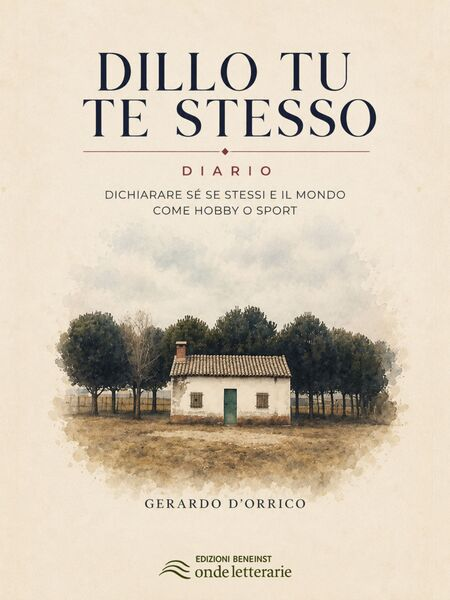
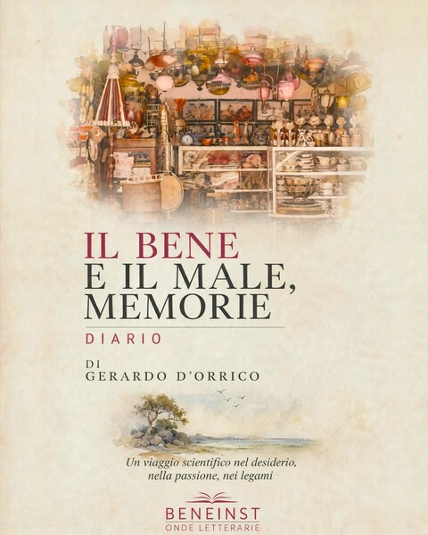
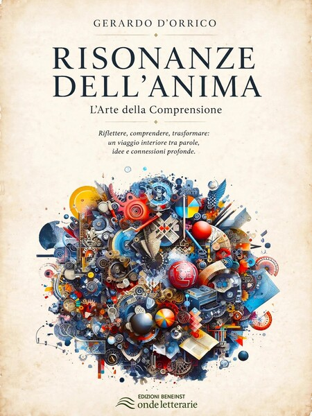
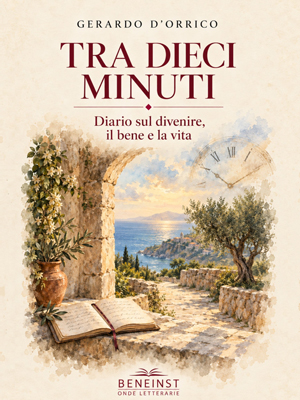
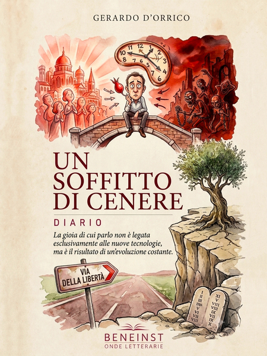

Percorsi letterari
Esplora la mia collezione di libri, un viaggio attraverso parole, emozioni e riflessioni che racchiude esperienze, idee e storie uniche.
Benvenuto nella biblioteca digitale delle mie opere letterarie, un universo di parole ed emozioni che prendono vita attraverso la scrittura.
Scopri le mie due esclusive collezioni: “Diari”, un viaggio autentico attraverso testi originali che catturano l’essenza del quotidiano, e “Espressioni dell’Anima”, una raccolta rivisitata che esplora le profondità dell’essere.
Ogni opera è un invito a scoprire nuovi mondi, disponibile in più lingue per accogliere lettori da ogni parte del mondo.
Immergiti nelle storie attraverso ebook, libri tascabili, copertine rigide e lasciati trasportare dalla magia delle parole con gli audiolibri multilingue.
Beneinst ti guida in questo viaggio letterario, offrendoti link diretti per l’acquisto su Amazon KDP.
Indice delle opere
Cerca un titolo oppure seleziona una collana. Ogni scheda conduce alla monografia dell’opera, con presentazione, formati disponibili e collegamenti editoriali.
Collana di quattro libri
Diari
Testi originali che raccolgono esperienze, pensieri e riflessioni personali attraverso una scrittura diaristica.
Vedi la collana su AmazonCollana di quattro libri
Esplorazioni dell’Anima
Una serie rivisitata dedicata alla coscienza, ai sentimenti e alla complessità dell’esperienza umana.
Vedi la collana su Amazon
Bilanciando l’Essenza
Riflessioni sul filo del presente e sulla ricerca di un equilibrio interiore.

Coscienza Autentica
Un’esplorazione delle profondità dell’essere, dell’identità e della consapevolezza.

Dillo tu te stesso
Un diario di pensieri, domande e confronti con la realtà quotidiana.

Il bene e il male, memorie
Memorie e riflessioni personali sul confronto tra bene, male e coscienza.
Pensieri Contaminati
Un percorso nel labirinto dei sentimenti, delle idee e delle contraddizioni.

Risonanze dell’Anima
Pensieri e percezioni che esplorano emozioni, memoria e vita interiore.

Siamo già noi tra dieci minuti
Un diario tra filosofia, movimento, tempo e gesti della vita quotidiana.

Un soffitto di cenere
Una narrazione diaristica tra memoria, inquietudine e ricerca di significato.
Nessuna opera corrisponde alla ricerca.